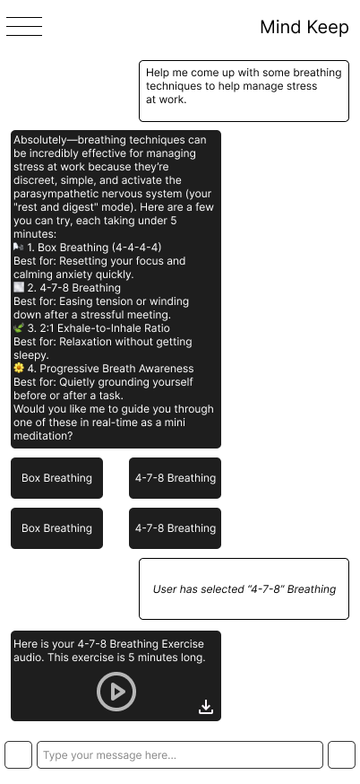
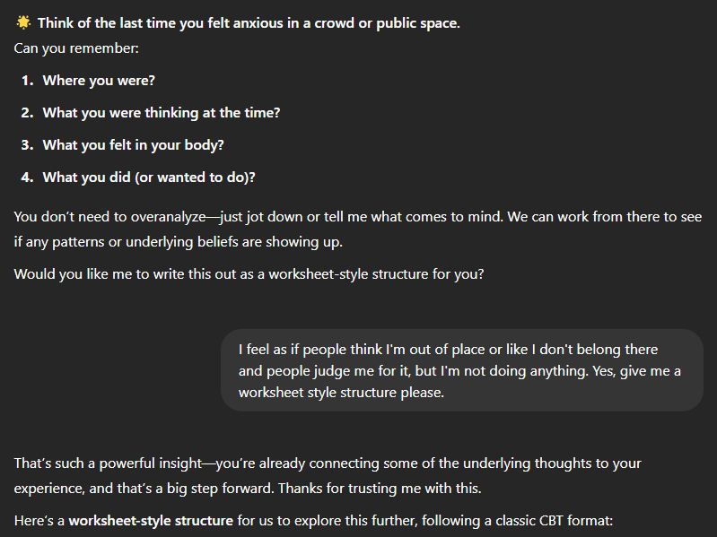
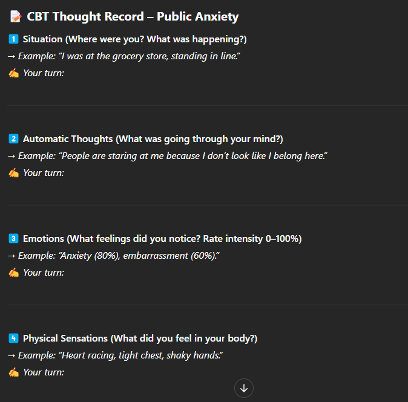
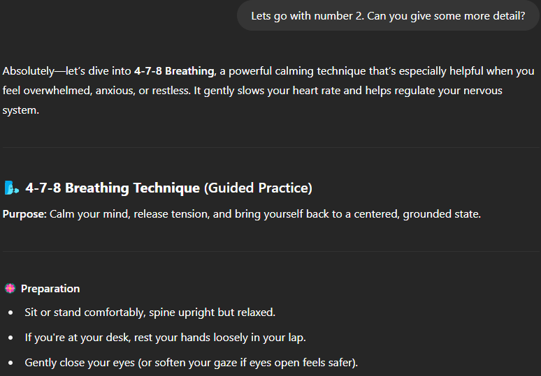
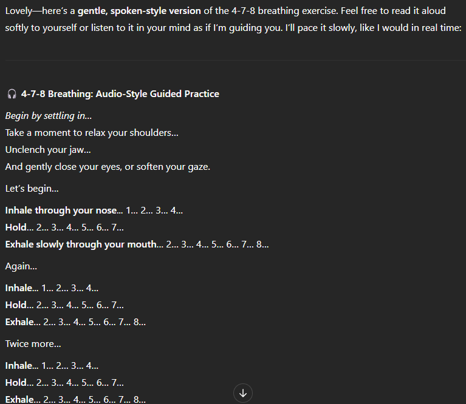

Mind Keep: Mental Health CUI
I designed Mind Keep as a conversational UX concept for more accessible mental health support, combining structured CBT guidance, guided meditation, and open-ended reflection in a format intended to be supportive without positioning itself as a therapist.

Overview
Mind Keep emerged from a practical accessibility problem: many people want help processing stress, anxiety, or negative thought patterns, yet traditional care is often expensive, delayed, logistically difficult, or emotionally difficult to initiate. I framed the project as a supplementary support tool rather than a replacement for therapy, then designed a conversational system that could help users reflect, regulate, and organize their thinking in the moment.
I focused the concept on three core tasks. First, structured CBT sessions for identifying thoughts, emotions, and distortions before reframing them. Second, guided meditations and breathing exercises for immediate regulation. Third, lightweight mental-health Q&A for people who needed quick support without entering a formal exercise.
Problem Space
The source material pointed me to three access barriers: financial, logistical, and psychological. My report cites therapy costs in the $125 to $250 range per 50-minute private session, while Mental Health America data showed a sizable share of adults with extended mentally unhealthy periods still could not access care due to cost. Even when people want support, the surrounding system can still require waitlists, forms, scheduling friction, and willingness to disclose personal struggles to another person.
That gap creates space for a different point of entry. A conversational system can be available 24/7, function on phone or desktop, and reduce the commitment barrier that causes many people to avoid formal care. The central design challenge was not availability alone, but designing a system structured enough to be useful, empathetic enough to feel safe, and appropriately constrained so that it would not overstep.
Goals
Make mental-health reflection more approachable for people who are not ready for therapy or cannot access it easily.
Use structured CBT patterns instead of generic empathy so the system helps users work through thoughts in a concrete way.
Support both reflective and in-the-moment regulation tasks through text, voice, breathing guidance, and lightweight controls.
Preserve user trust through consent checks, transparent limitations, privacy-sensitive interaction patterns, and crisis-aware responses.
Research
I grounded the concept in both literature and real therapeutic structure. In my final report, I drew on APA descriptions of CBT, systematic review findings across Woebot, Wysa, and Youper, and research on authenticity limits in AI empathy. That combination was important because it pushed the design away from generic chatbot behavior and toward a repeatable therapeutic scaffold.
Why CBT
- CBT gives the system a reliable structure: situation, thoughts, emotions, distortions, reframing, and follow-up.
- It supports longitudinal use through thought logs, homework, and reflective review across multiple sessions.
- The format is easier to operationalize in dialogue than open-ended therapy simulation.
What the research changed
- Empathy needed limits. The bot should avoid first-person anecdotes that feel uncanny or false.
- Meditation needed to be more than text. Audio pacing and controls are part of the core experience.
- Long-term usefulness depends on memory, pacing, and avoiding repetitive generic advice.
I also used my midterm work to examine real CBT transcripts and break them into reusable interaction components such as open inquiry, situation understanding, challenge, reflection, and homework. That move let me translate clinical flow into interaction architecture instead of copying therapy aesthetics.
Personas + Early Concepts
I strengthened the concept in the midterm phase by designing for two distinct usage modes instead of one generic "mental health user." Lauren represented the structured CBT path. Alex represented quick de-escalation and recovery through guided meditation.
Lauren, 19, part-time barista
- Struggles with social anxiety and self-blame in friendships.
- Cannot easily afford therapy without employer-supported coverage.
- Needs structured help interrupting negative thought spirals and reframing assumptions.
Alex, 22, full-time college student
- Overcommits across academics and campus involvement.
- Needs short, actionable support when overwhelmed and burnt out.
- Benefits more from breathing, audio guidance, and low-friction calming tools.
These personas directly shaped my early testing methods. For the CBT flow, I used a Think Aloud paper prototype because the dialogue needed to stay reactive to whatever the user wrote. For the meditation flow, I used a Wizard of Oz format with text, audio cues, and simulated guidance because the real value came from how the interaction felt while the user disengaged from the screen.
Solution + Prototype
I shifted the final prototype from paper to a working custom GPT. That let me test real dynamic responses instead of static branching. It also let me encode behavioral rules at the instruction level: tone, scope, crisis handling, consent checks, pacing, and when to offer structured exercises.
System behavior rules
- Warm and supportive tone without pretending to have human experiences.
- Consent check before deeper CBT or meditative work.
- Shorter responses when users type briefly, to avoid overload.
- Support for off-script Q&A without breaking the overall mental-health framing.
Knowledge base inputs
- CBT clinical simulation transcript
- Systematic review of AI-powered CBT chatbots
- Research on AI meditation apps
- Research on therapeutic robots and artificial empathy
- Supporting background for tone, authenticity, and behavioral limits
I also made a pragmatic platform choice. I considered BotPress, LandBot, and VoiceFlow, but selected ChatGPT because the responses were more reactive and substantially less constrained than rigid pre-authored flows. That mattered in this CUI because the quality of therapeutic pacing depended on the system's ability to follow a user's actual context.




Testing + Findings
I used two useful testing phases in this project. Early on, I used focus-group-style questions, paper prototyping, and Wizard of Oz simulation to understand whether the concept felt approachable at all. In the final round, I tested the custom GPT with two pilot users and an exploratory review from a psychology doctoral student.
What users responded to
- The structured CBT flow made difficult thoughts easier to examine.
- Guided audio meditation was valued because it supported hands-free use.
- Participants saw the tool I built as a credible form of supplementary support.
- I found that the system's ability to generate tailored content was stronger than expected.
What broke trust or flow
- Responses could become too long or overly eager to keep prompting.
- Artificial warmth sometimes felt robotic rather than grounding.
- The initial option set risked making the product feel narrower than it was.
- Voice-mode meditation still had naturalness limitations tied to the platform.
A consistent pattern I found across both the midterm and final materials was that people responded more strongly to structure than personality. That insight helped me understand that the product performs best when it acts as a clear guide with a supportive tone, rather than when it attempts to simulate human closeness too aggressively.
Safety + Limitations
Because I was designing for mental health support rather than a typical productivity or commerce flow, I treated the safety decisions as first-class design work. My reports repeatedly return to four constraints: transparency, crisis escalation, privacy, and longitudinal memory.
- I explicitly framed Mind Keep as a supplemental tool, not medical advice or licensed care.
- I designed the system to redirect people to crisis resources instead of giving flat refusal language for harmful prompts.
- Privacy expectations need to be made visible early, including secure handling and optional unsaved chats for sensitive questions.
- Session memory is useful for CBT, but it must be balanced against user control and comfort with stored history.
In my final report, I also identified engagement as an important product risk. Even if people value the tool, long-term use is not guaranteed. That means success should not be measured only by immediate satisfaction. It should also be measured by whether the product can maintain trust, adapt response depth, and create a reason to return without becoming repetitive.
Next Steps
Refine response pacing so users can choose concise or detailed support modes and pause before the next prompt.
Add stronger privacy framing, optional temporary chats, and easier access to previous CBT sessions for reflection.
Improve the meditation entry UI with more visual controls and better integration between buttons, audio, and text states.
Expand testing beyond convenience sampling and measure sustained use, not just first-session reaction.